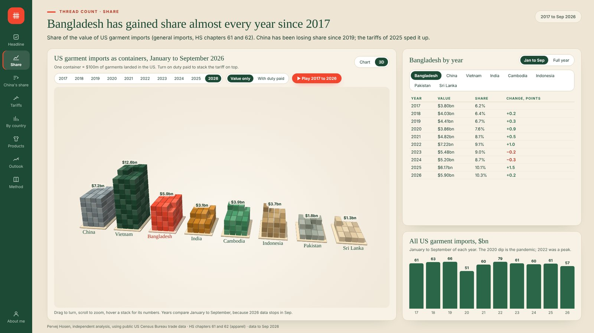
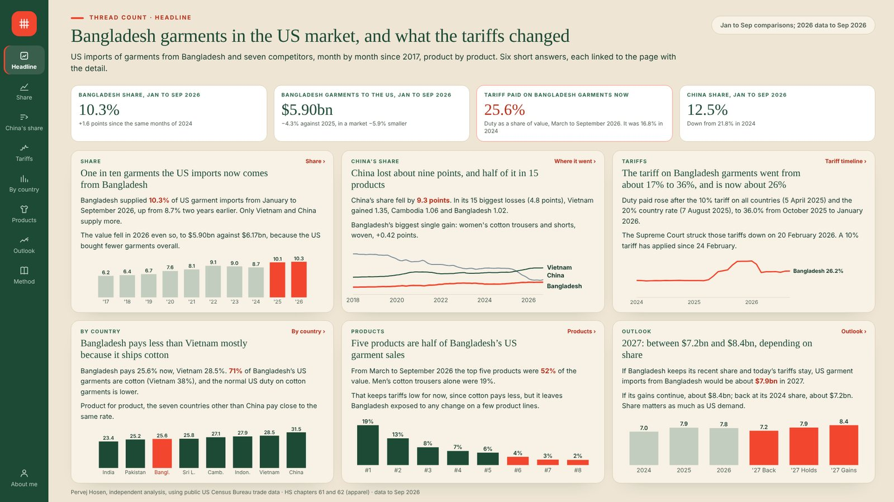
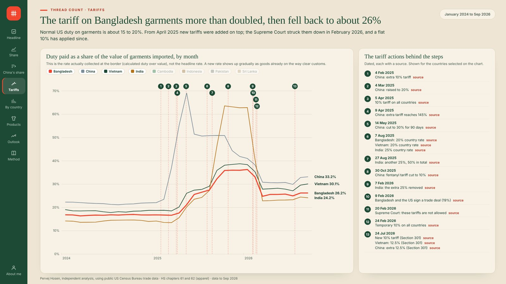
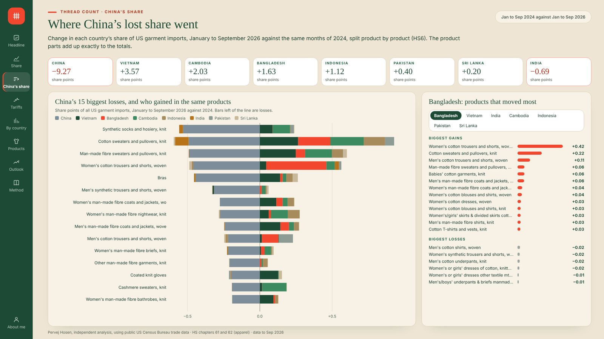

The brief
Eight questions, each answered with a number
Before building anything I wrote down who would read this and what each of them would want answered.
For exporters and industry
For policy
For everyone
What the data shows
Five findings
US imports of garments (HS chapters 61 and 62), January 2017 to September 2026. Years are compared on January to September, because 2026 data stops in September.
Finding 1
One in ten garments the US imports now comes from Bangladesh
Bangladesh supplied 10.3% of US garment imports from January to September 2026, up from 8.7% two years earlier and 6.2% in 2017. Only Vietnam and China supply more.
The value still fell in 2026, to $5.90bn against $6.17bn, because the US bought about 6% fewer garments overall.
Bangladesh's share of US garment imports
January to September of each year · hover a bar
Finding 2
China lost about nine points, and most of it went to Vietnam, Cambodia and Bangladesh
China's share fell by 9.3 points between 2024 and 2026. Vietnam gained 3.6, Cambodia 2.0, Bangladesh 1.6. India lost ground too.
Half of China's loss sits in 15 products, such as sweaters, bras and socks. Bangladesh's single biggest gain was women's cotton trousers, almost exactly what China lost in that product.
Change in share, January to September 2026 against 2024
Share points of all US garment imports
Finding 3
The tariff on Bangladesh garments went from about 17% to 36%, and is now about 26%
Duty paid stayed near 17% for years. It rose after the 10% tariff on all countries (5 April 2025) and Bangladesh's 20% country rate (7 August 2025), to about 36% from October 2025 to January 2026.
The Supreme Court struck those tariffs down on 20 February 2026. A flat 10% has applied since 24 February, under a new law from 24 July.
Duty paid on Bangladesh garments, by month
Calculated duty as a share of value · dotted lines: tariff actions
Finding 4
Bangladesh pays less than most competitors, mostly because it ships cotton
Bangladesh pays 25.6% now, Vietnam 28.5%, China 31.5%. 71% of Bangladesh's US garments are cotton (Vietnam 38%), and the normal US duty on cotton garments is lower.
Priced product by product at the average rate the other countries pay, the seven countries other than China land within a point of their actual rate. China pays about six points more, from US duties dating to 2018 and 2019.
Tariff paid now, and what product mix alone would give
March to September 2026 · bar: actual · dot: product mix only
Finding 5
Five products carry half of Bangladesh's US garment sales
From March to September 2026 the top five products were 52% of the value, and men's cotton trousers alone 19%. Only Pakistan relies on fewer products.
That keeps tariffs low for now, since cotton pays less, but leaves Bangladesh exposed to any change on a few product lines. Only 14% of its value pays 30% or more, against 30% for Vietnam and 61% for China.
Bangladesh's biggest products in the US
Share of value, March to September 2026 · green: cotton · red: man-made fibre
What comes next
To 2027, share matters as much as US demand
Three paths, not a prediction. Each keeps today's tariffs and the usual seasonal pattern; they differ only in Bangladesh's share. The US market forecast was tested from four past start dates and missed by about 7% a month on average.
2026 adds a forecast for October to December. A start date for the US-cotton route, a change to the 10% tariff, or refunds of the tariffs struck down in February 2026 would each move these numbers.
The report
Eight pages in one custom visual
Built like a small app: a side rail, a country picker on the detail pages, and a 3D port where every container is $100m of garments. Press play to watch 2017 to 2026, or stack the duty paid on top.




Who could use it
Options by reader
Options, not demands. Each is something the data suggests would help, with who is in a position to act.
Factories, BGMEA, BTMA
- Look at the products China is still losing. Sweaters, bras, socks and nightwear moved mostly to Vietnam and Cambodia so far.
- Weigh the five-product dependence. Over half the value rides on trousers, sweaters, T-shirts and shirts in cotton.
Commerce Ministry, EPB, negotiators
- Confirm when and how the US-cotton route applies. Cotton is 71% of Bangladesh's US garments.
- Track duty paid, not only headline rates. The rate actually collected moves months after an announcement.
Sourcing teams
- Compare like with like. Most of the tariff gap between countries is product mix, not country treatment.
- Plan for seasonal peaks from July to October, when arrivals run highest.
Journalists and readers
- Use share and value together. Share rose in 2026 while value fell, because the US bought less.
- Note the definition. This uses HS 61 and 62; OTEXA counts a wider set, so its totals run higher.
How it was built
From public files to a checked report
Everything runs from scripts, so the report rebuilds when new monthly data arrives.
Collect
- US Census Bureau trade API, HS6 by country and month, 2017 to 2026
- Eight countries plus the world total, four chapters
- 21 tariff actions, each dated and sourced
Model
- DuckDB bronze, silver and gold layers
- Share changes split exactly by product
- Product mix priced at peer average rates to separate mix from treatment
Forecast
- Exponential smoothing with a damped trend and monthly pattern
- Backtested from four start dates, 12 months ahead
- Three share scenarios for Bangladesh
Report
- Neon Postgres feeding Power BI
- One DAX measure hands the data to a custom visual
- SVG charts and a WebGL 3D port
Checked before it went out
A separate script recomputes the headline numbers straight from the raw Census files, without the database: 39 checks, all matching. An outside check against OTEXA's 2025 figures matched on growth (11.72% against 11.75%).
Limits
What this cannot tell you
- It shows what the US imported, valued at the border before duty, not what Bangladesh exported, and not prices or profits.
- Duty paid is calculated duty over value for goods entered for consumption. Refunds of the tariffs struck down in February 2026 are still in court and are not reflected.
- HS6 detail hides finer product differences. Fibre is read from product descriptions, so it is approximate.
- The data cannot say why a buyer moved an order. Tariffs are one reason among many.
Open to correction
This is independent work on public data. If a number looks wrong, get in touch through the contact form and I will fix it.